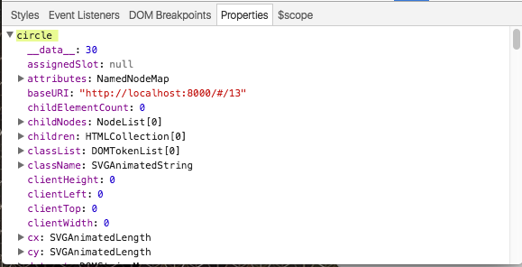

March 14, 2017
D3.js
eslivinski@gmail.com
@eslivinski
eslivinski.github.io/d3.js
eslivinski.github.io/d3.js/examples.html
Today's Game Plan:
- d3 background
- svg basics
- editing svgs with d3
- mapping with d3
= Data Driven Documents

- Data Visualization Rock Star — Nieman Lab
- Creator of: d3.js, topojson, bl.ocks.org, and many others
- Former Data Visualization Editor, New York Times
- Hi, I'm Mike Bostock
SVG
SVG Elements
SVG Attributes
Basic SVG Shapes
eslivinski.github.io/d3.js/examples.html
svg-basics / circles
svg-basics / rectangles
svg-basics / text
Modifying SVGs
with d3.js
modifying-svgs / d3.select, d3.attr
// STEP #1: Identify the element wish to modify
var circle = d3.select('circle');
// STEP #2: Use the attr method to change the element's fill
// from blue to orange
circle.attr('fill', 'orange');
modifying-svgs / d3.selectAll
// Select will only grab the first element matches the selection
d3.select('circle')
.attr('fill', 'orange');
// selectAll will grab all elements that match the description
d3.selectAll('circle')
.attr('fill', 'purple');
Selectors
element #id .class [attribute = "value"] parent > child #ancestor .descendent
...
Selectors
Select Me
// Pure Javscript
document.querySelector('foo#bar');
// Jquery
$('foo#bar');
// d3
d3.select('foo#bar');
Animating SVGs
#transitions-d3-transition
animating-svgs / d3.transition
// STEP #1: Make the circle bigger
// Attr changes called after .transition will happen
// gradually
d3.select('circle')
.transition()
.attr('r', 100);
// STEP #2: Make the circle purple as it moves to the right
// If multiple attr changes occur after .transition they
// happen at the same time
d3.select('circle')
.transition()
.attr('cx', 500)
.attr('fill', "purple");
// STEP #3: Make the circle hot pink then make it smaller
// Separating groups of attr changes with .transition
// method calls will create stepped animations
d3.select('circle')
.transition()
.attr('fill', '#E91E63')
.transition()
.attr('r', 10);
Data Binding
data-binding / d3.selection.data
var my_data = [30];
d3.select('circle')
.data(my_data);

So what?
- How elements should look on the page
- Which elements should be on the page
Data-binding can help us define:
data-binding / dynamic-attributes
var my_data = [30]
d3.select('circle')
.data(my_data)
.transition()
.attr('r', function(d, i) {
// whenever a function is passed into a method of
// a d3 attribute function the first parameter (d)
// always represents the data bound to that element
// and the second (i) always represents the index
// of that element in the selection
return d;
});
data-binding / complex-data-models
var my_data = [
{ stat_1: 100, stat_2: 50 }
];
d3.select('circle')
.data(my_data)
.transition()
.attr('r', function(d, i) {
return d.stat_1;
})
.attr('fill', function(d, i) {
if (d.stat_2 >= 100) {
return 'red';
} else {
return 'blue';
}
});
Creating
New
Elements
data-binding / d3.selection.data.enter
// Create elements by adding an additional data object
var my_data = [
{ stat_1: 40, stat_2: 10 },
{ stat_1: 30, stat_2: 250 },
{ stat_1: 130, stat_2: 40 }
];
// Have to adjust to our selection to first select the
// container then select the child elements we are
// interested in and to use selectAll
// even though there is currently only one circle
var circles= d3.select('svg')
.selectAll('circle')
.data(my_data);
// Only Happens to the new circles
var newCircles = circles.enter()
.append('circle');
// Update the definition of circles var to include
// the new circles
circles = circles.merge(newCircles)
.attr('cy', 100)
.attr('cx', function(d, i) {
return (i+1) * 200;
})
.transition()
.attr('r', function(d, i) {
return d.stat_1;
})
.attr('fill', function(d, i) {
if (d.stat_2 >= 100) {
return 'red';
} else {
return 'blue';
}
});
Removing Elements
data-binding / d3.selection.data.exit
var my_data = [
{ stat_1: 150, stat_2: 300 },
{ stat_1: 30, stat_2: 115 }
];
var circles = d3.select('svg')
.selectAll('circle')
.data(my_data);
// Get rid of the extra circle
circles.exit()
.remove();
// Won't be needed because the data is getting smaller
// But we will include it for good measure
var newCircles = circles.enter()
.append('circle');
circles.merge(newCircles)
.attr('cy', 100)
.attr('cx', function(d, i) {
return (i+1) * 200;
})
.transition()
.attr('r', function(d, i) {
return d.stat_1;
})
.attr('fill', function(d, i) {
if (d.stat_2 >= 100) {
return 'red';
} else {
return 'blue';
}
});